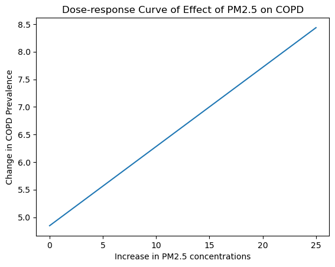

Research Question 2: Causal Effects of PM2.5 on COPD#
We use Causal Inference to determine any causal effect of PM2.5 concentration on COPD (chronic obstructive pulmonary disease).
resources:
https://towardsdatascience.com/causal-inference-with-continuous-treatments-5ff691869a65
difference in outcomes - lab 8
import pandas as pd
import statsmodels.api as sm
from scipy import stats
import matplotlib.pyplot as plt
PATH_TO_DATA = "../data"
PATH_TO_FIGURES = "../figures"
# read CDI data as DataFrame
cdi = pd.read_csv(PATH_TO_DATA + '/cdi.csv')
/tmp/ipykernel_56190/1892416865.py:2: DtypeWarning: Columns (10) have mixed types. Specify dtype option on import or set low_memory=False.
cdi = pd.read_csv(PATH_TO_DATA + '/cdi.csv')
Preparing COPD and smoking datasets#
copd = cdi[(cdi['Topic'] == "Chronic Obstructive Pulmonary Disease") &
(cdi['Question'] == 'Prevalence of chronic obstructive pulmonary disease among adults >= 18') &
(cdi["YearStart"].isin([2011, 2012, 2013, 2014])) &
(cdi["StratificationCategory1"] == 'Overall') &
(cdi["DataValueType"] == 'Age-adjusted Prevalence')]
copd = copd[['YearStart', 'LocationAbbr', 'LocationDesc', 'DataValueAlt',
'LowConfidenceLimit', 'HighConfidenceLimit']].rename(columns={"DataValueAlt": "COPD Prevalence"})
smoking = cdi[(cdi["Topic"] == 'Tobacco') & (cdi["Question"] == "Current smoking among adults aged >= 18 years") &
(cdi["YearStart"].isin([2011, 2012, 2013, 2014])) &
(cdi["StratificationCategory1"] == 'Overall') &
(cdi["DataValueType"] == 'Age-adjusted Prevalence')]
smoking = smoking[['YearStart', 'LocationAbbr', 'LocationDesc', 'DataValueAlt',
'LowConfidenceLimit', 'HighConfidenceLimit']].rename(columns={"DataValueAlt": "Smoking Prevalence"})
yearly_pm25_avg = pd.read_csv(PATH_TO_DATA + "/yearly_pm_by_state.csv")
yearly_pm25_avg = yearly_pm25_avg.melt(id_vars='abbrev').rename(columns={'variable': 'YEAR', 'value': 'pm25'})
yearly_pm25_avg.head()
| abbrev | YEAR | pm25 | |
|---|---|---|---|
| 0 | AL | 2011 | 11.748242 |
| 1 | AZ | 2011 | 7.838444 |
| 2 | AR | 2011 | 11.059018 |
| 3 | CA | 2011 | 9.746000 |
| 4 | CO | 2011 | 5.870499 |
copd["YearStart"] = copd["YearStart"].astype(str)
smoking["YearStart"] = smoking["YearStart"].astype(str)
yearly_pm25_avg["YEAR"] = yearly_pm25_avg["YEAR"].astype(str)
Merging CDI and PM2.5 datasets#
data = yearly_pm25_avg.merge(smoking, left_on=["YEAR", "abbrev"], right_on=['YearStart', 'LocationAbbr'], how='inner')
data = data[["YEAR", "abbrev", "pm25", "Smoking Prevalence"]]
df = copd.merge(data, left_on=["LocationAbbr", "YearStart"], right_on=["abbrev", "YEAR"], how='inner')
df.head()
| YearStart | LocationAbbr | LocationDesc | COPD Prevalence | LowConfidenceLimit | HighConfidenceLimit | YEAR | abbrev | pm25 | Smoking Prevalence | |
|---|---|---|---|---|---|---|---|---|---|---|
| 0 | 2011 | AL | Alabama | 9.3 | 8.4 | 10.2 | 2011 | AL | 11.748242 | 24.6 |
| 1 | 2013 | AL | Alabama | 9.9 | 8.9 | 11.0 | 2013 | AL | 9.714757 | 22.1 |
| 2 | 2012 | AL | Alabama | 9.3 | 8.5 | 10.2 | 2012 | AL | 11.454434 | 24.4 |
| 3 | 2014 | AL | Alabama | 9.7 | 8.9 | 10.5 | 2014 | AL | 12.506239 | 21.7 |
| 4 | 2012 | AR | Arkansas | 8.2 | 7.4 | 9.2 | 2012 | AR | 9.843660 | 25.7 |
data_filtered = df[["YEAR", "abbrev", "pm25", "Smoking Prevalence", "COPD Prevalence"]]
data_filtered = data_filtered.rename(columns={'Smoking Prevalence':"smoking_prevalence", "COPD Prevalence": "copd_prevalence"})
data_filtered.sort_values(by='pm25').head()
| YEAR | abbrev | pm25 | smoking_prevalence | copd_prevalence | |
|---|---|---|---|---|---|
| 195 | 2014 | WY | 4.797520 | 19.9 | 6.4 |
| 97 | 2013 | MT | 4.929152 | 19.6 | 5.9 |
| 193 | 2013 | WY | 5.199149 | 20.8 | 6.7 |
| 104 | 2014 | ND | 5.200405 | 20.6 | 4.4 |
| 182 | 2012 | WA | 5.418286 | 17.2 | 5.5 |
Outcome regression with IPW#
def conditional_densities(data, use_confounders=True):
formula = "pm25 ~ 1"
if use_confounders:
formula += "+ smoking_prevalence"
model = sm.formula.ols(formula, data=data).fit()
density = stats.norm(
loc=model.fittedvalues,
scale=model.resid.std(),
)
densities = density.pdf(data["pm25"])
densities = pd.Series(densities, index=model.fittedvalues.index)
return densities
denominator = conditional_densities(data_filtered, use_confounders=True)
numerator = conditional_densities(data_filtered, use_confounders=False)
generalized_ipw = numerator / denominator
generalized_ipw
0 0.729269
1 0.954873
2 0.764066
3 0.893179
4 0.953540
...
191 0.916872
192 1.652012
193 1.242220
194 1.423198
195 1.110807
Length: 196, dtype: float64
model_copd = sm.formula.wls(
"copd_prevalence ~ 1 + pm25 ",
data=data_filtered,
weights=generalized_ipw,
).fit()
concentration = list(range(26))
concentration = pd.DataFrame(
data={"pm25": concentration},
index=concentration)
response = model_copd.predict(concentration)
ax = response.plot(
kind="line",
xlabel="Increase in PM2.5 concentrations",
ylabel="Change in COPD Prevalence",
title="Dose-response Curve of Effect of PM2.5 on COPD"
)
plt.savefig(PATH_TO_FIGURES + "/IPW_graph.png")

model_copd.conf_int()
| 0 | 1 | |
|---|---|---|
| Intercept | 3.827262 | 5.865089 |
| pm25 | 0.037483 | 0.249698 |
model_copd.summary()
| Dep. Variable: | copd_prevalence | R-squared: | 0.035 |
|---|---|---|---|
| Model: | WLS | Adj. R-squared: | 0.030 |
| Method: | Least Squares | F-statistic: | 7.123 |
| Date: | Fri, 12 May 2023 | Prob (F-statistic): | 0.00825 |
| Time: | 06:23:37 | Log-Likelihood: | -356.43 |
| No. Observations: | 196 | AIC: | 716.9 |
| Df Residuals: | 194 | BIC: | 723.4 |
| Df Model: | 1 | ||
| Covariance Type: | nonrobust |
| coef | std err | t | P>|t| | [0.025 | 0.975] | |
|---|---|---|---|---|---|---|
| Intercept | 4.8462 | 0.517 | 9.381 | 0.000 | 3.827 | 5.865 |
| pm25 | 0.1436 | 0.054 | 2.669 | 0.008 | 0.037 | 0.250 |
| Omnibus: | 29.642 | Durbin-Watson: | 1.034 |
|---|---|---|---|
| Prob(Omnibus): | 0.000 | Jarque-Bera (JB): | 41.991 |
| Skew: | 0.890 | Prob(JB): | 7.62e-10 |
| Kurtosis: | 4.406 | Cond. No. | 47.4 |
Notes:
[1] Standard Errors assume that the covariance matrix of the errors is correctly specified.